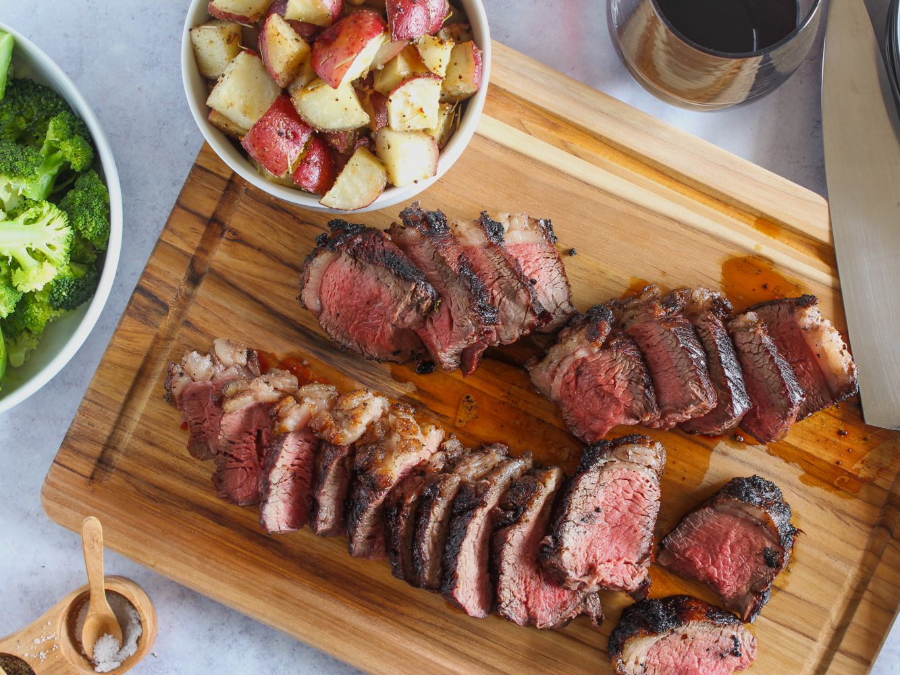

Picanha!

Description
The Picanha is the quintisential Brazilian cut of beef. It benefits from the fat cap that covers the top side of the cut. This cut of beef requires very little seasoning, due to the fat providing much of the flavor.
Ingredients
Steps
- Pull the Picanha from the fridge
- Unwrap the picanha
- quickly rinse the picanha and pat dry with pater towels
- Place the picanha on a cuttin board
- Cut and remove the "silver skin/fat" from the picanha
- Cut the steak against the grain into pieces no wider than 3 inches
- Heat the grill to a medium-high heat
- once grill is heated, place picanha slices on their sides directly over the heat
- Flip the picanha every 7 or so minutes
- cut into the picanha to gauge how cooked the meat is
- Pull the picanha slices from the grill once they are cooked to your liking
- The picanha can be either served in the slices you pilled from the grill or it can be cut into smaller slices